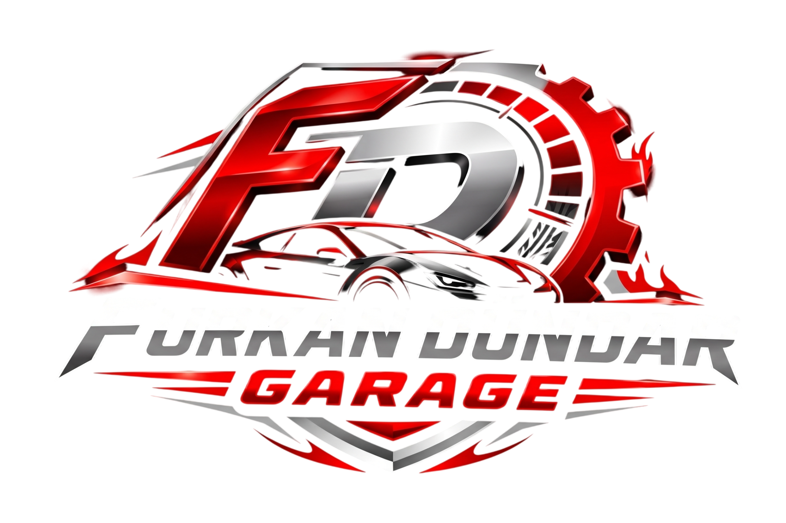

Ana Sayfa
Hizmetlerimiz
Randevu Al
TÜM BAKIM VE TAMİR İŞLEMLERİ
TEK ÇATI ALTINDA!
Aracınız Bizim İçin Emanettir. Uzman Kadro, Modern Ekipman.
MOTOR BAKIMI
Periyodik Bakım
Yağ Değişimi
Filtre Değişimi
Uzun Ömürlü Performans
FREN SİSTEMLERİ
Balata Değişimi
Disk Kontrolü
Fren Hidroliği
Güvenli Sürüş
ARIZA TESPİT
Bilgisayarlı Arıza Tespit
Elektronik Sistem Kontrolü
Hızlı ve Doğru Analiz
Uzman Kadro
KLİMA BAKIMI
Klima Gaz Dolumu
Klima Temizliği
Performans Artışı
4 Mevsim Konfor
SÜSPANSİYON BAKIMI
Amortisör Kontrolü
Şase Kontrolü
Denge ve Konfor
Güvenli Yol Tutuşu
ELEKTRİK & ELEKTRONİK
Elektronik Sistem Kontrolü
Akü Kontrolü
Aydınlatma Sistemleri
Arıza Tespit ve Onarım